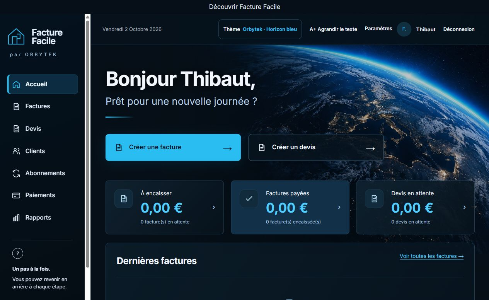

Orbytek · Thibaut Courtois
Facture Facile : partir d’un besoin réel.
Facture Facile est le projet de facturation à l’origine d’Orbytek. Je l’ai créé pour mes parents, qui n’avaient jamais vraiment utilisé un ordinateur. Le besoin était de partir de leur façon de travailler pour concevoir un outil adapté à eux.
Parlons de votre besoin →Projet personnel et familial · Application web
Le problème de départ
Un outil informatique ne doit pas exiger que ses utilisateurs deviennent experts. Le point de départ de ce projet était la création d’une application de facturation pour mes parents, avec une interface adaptée à leur usage.
La solution présentée
Le portfolio présente une interface de création de factures et de devis, le suivi des paiements et des documents PDF. Le projet illustre comment regrouper des fonctions de gestion dans un outil métier.

Mon intervention
J’ai créé l’application en partant d’un besoin concret de facturation. Ce projet a nourri la démarche d’Orbytek : comprendre les personnes et leur activité avant de construire la solution technique.
Ce que vous pouvez examiner
L’interface est accessible depuis le portfolio pour découvrir le fonctionnement présenté. Cette présentation du projet personnel et familial porte sur le besoin initial et les fonctions visibles de l’application.
Explorer Facture Facile (nouvel onglet) →Vous avez un besoin de gestion similaire ?
Décrivez vos documents, vos utilisateurs et les opérations à simplifier. Découvrez le développement d’applications sur mesure pour préparer votre demande.
Un interlocuteur direct
Expliquez-moi votre besoin.
Votre activité, vos outils actuels et votre échéance : quelques lignes suffisent pour commencer la discussion.
Demander un devis →